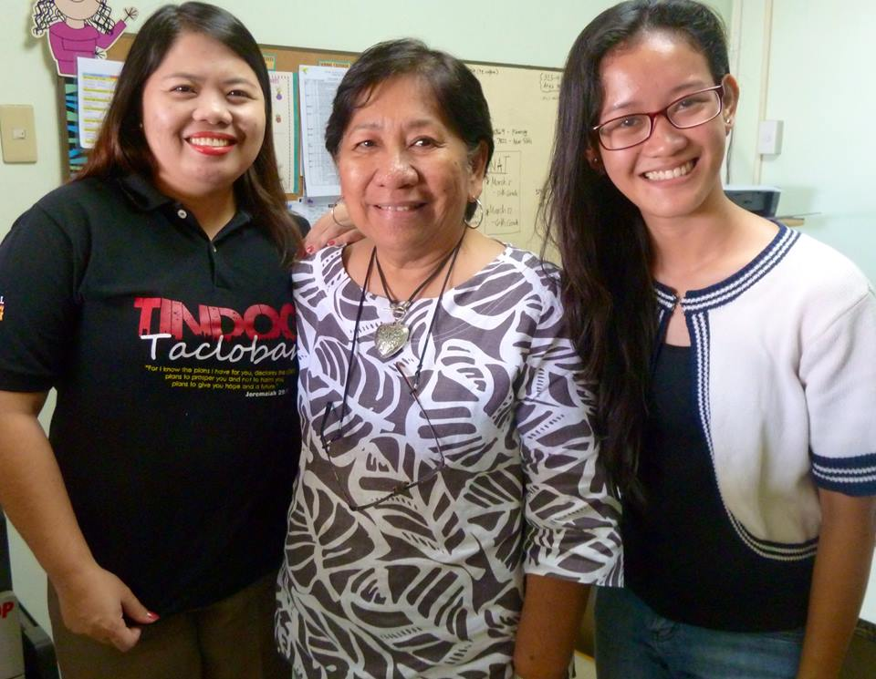
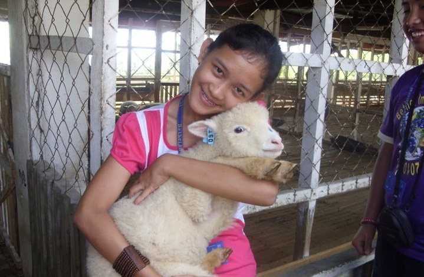
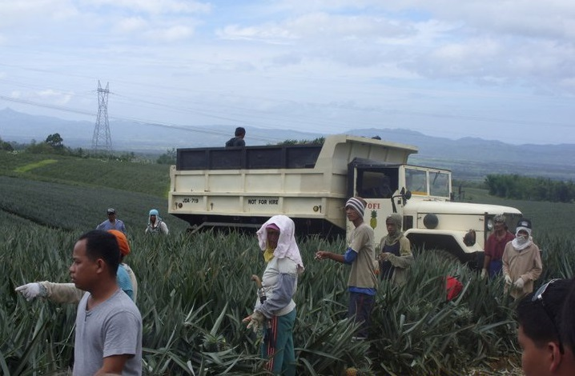
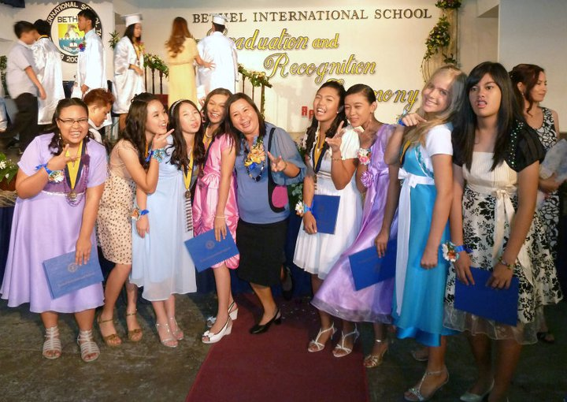
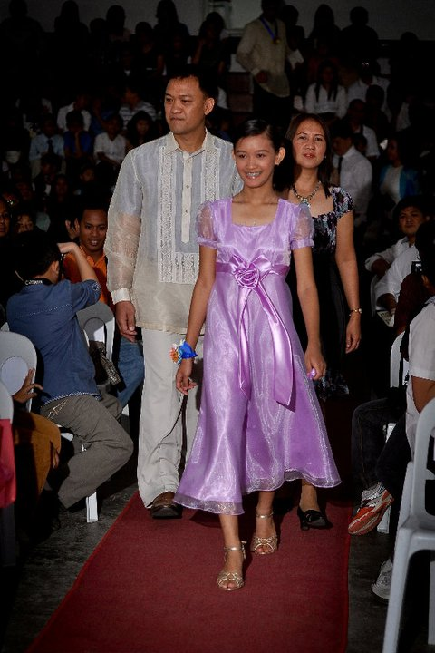

2. 0. 1. 0
BETHEL INTERNATIONAL SCHOOL
Bethel really became my second home where I found my sisters and brothers from different parents. We've made so much memory together with just a numbered years together. We have shared laughs, tears, pain, success, anger and love. I would never exchange my memories with these people for anything in the world, because they mean the world to me.
These people, even though we've been afar, still remembers me and asks me about anything under the sun. They still call just to bug me around, though it may sometime annoys me yet I appreciate the bond we have. The connect that will always be there even though we haven't met as a whole for a very long time.

Others have moved back to their own country but still we are family. And sooner or later, our dream of visiting each and reuniting anywhere around the globe would come true.

I would always be thankful to this woman beside me because she is one of the best principal I have ever known. She is the epitome of love, care, and support because, even though, she has a busy schedule, she would really give time to you whenever you come by her office.

And during 7th Grade, we have this outdoor education, where we go our of the confinements of the school in five days to have some fun and learning.
On those five days being out of school, we went to different places about Leyte. There was a sheep farm, a pineapple farm, a swim to a lake and an island, a tour to a geothermal plant and to a zoo. It was jampacked but it was very enjoyable.

Remembering this now, feels like it all happened yesterday.
 
This is the place where I spent most of my time in school. The longest and treasurable memories were made in the four corners of this campus. This is were I graduated in elementary in the most weird way to other people, maybe, since elementary graduation in Bethel is in 7th Grade and we don't wear togas rather sunday dresses and barong for boys.